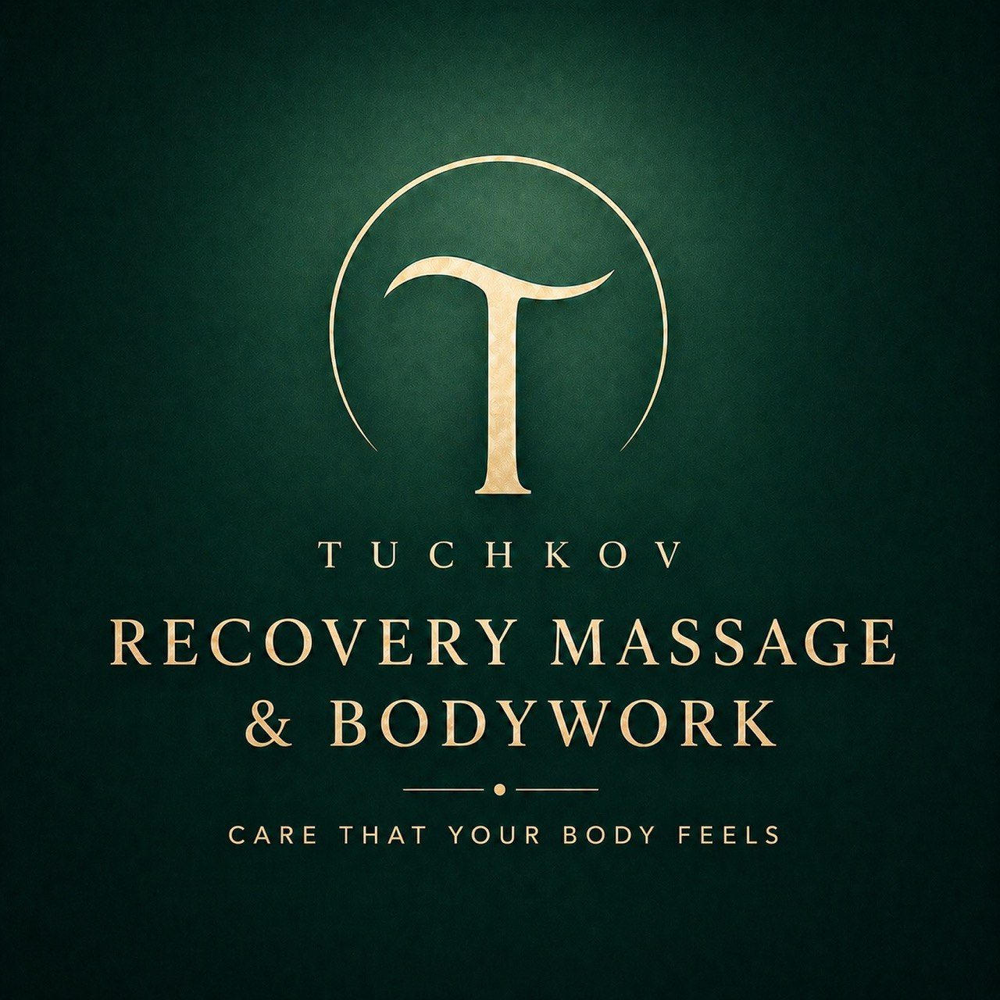
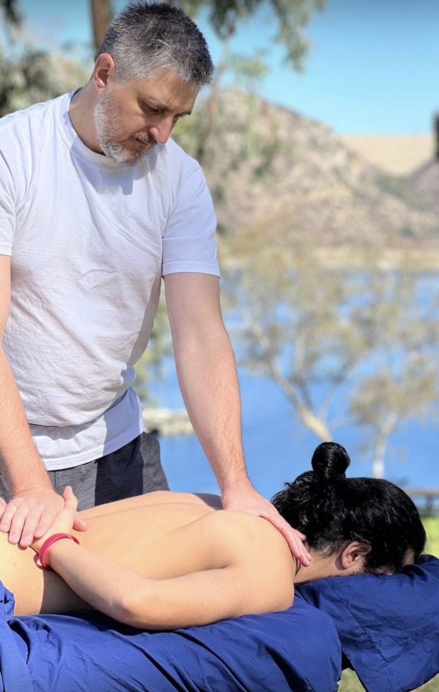

Andrei Tuchkov
Therapeutic Massage · 15+ Years of Practice · La Mesa, CA
Book Your SessionAbout Me
I'm Andrei Tuchkov, and I've spent more than a third of my life studying massage and working with the body. For me, this is not just a profession — it's a way to genuinely help people feel better, move more freely, and feel more at ease in their bodies.
Over more than 15 years of practice, I've worked with thousands of people. I've worked both with everyday clients who want to maintain their bodies in good condition, and with more demanding individuals. Among my clients were members of the city administration and mayor's office where I previously lived — and that always comes with responsibility and the need for consistent, reliable results.
Over the years, I've worked with people from many different countries: Russia, Ukraine, Belarus, Kazakhstan, Poland, the Czech Republic, Norway, Turkey, Korea, Mexico, the United States, Canada, Armenia, Costa Rica… Working with people from different countries, I noticed one simple thing: the human body is built the same way… and it tends to hurt in very similar places. Well, it seems that muscles don't really care about nationality — they just do their job.
In my practice, I've also worked with more complex cases. I've helped support physical development in babies born significantly premature. I've worked with people dealing with anorexia. I also worked in a medical center focused on weight loss, supporting clients as their bodies went through significant physical changes. I've supported recovery after accidents, surgeries, and strokes. I've worked with paralyzed clients, with elderly individuals aged 87+, and with a teenager with cerebral palsy. In these situations, it's especially important to work carefully, attentively, and without relying on templates — to understand what is happening in the body and how to work with it. This approach leads to real, noticeable improvements in how a person feels and functions.
All of this is in addition to more common situations where a person is considered 'healthy,' but lives with constant tension in the neck, shoulders, back, or legs… or, on the contrary, with a sense of weakness and lack of support in the body.
Over time, I've come to understand one clear thing: everyone can benefit from massage. And the more accumulated issues a person has, the more obvious it becomes that a systematic approach is necessary. In most cases, one type of massage is not enough — the body needs thoughtful, consistent work.
That's why I don't follow a template. In each session, I combine different techniques and approaches, selecting them based on the individual and their current condition. This may include deep tissue work, stretching, and structural work — depending on the goal. This approach doesn't just provide temporary relief, but leads to noticeable and lasting results.
People don't come to me only to relax. They come when they want to better understand their body, reduce pain, restore mobility, feel lighter… and simply start feeling like themselves again.

Book a Session
Each session is a personalised combination of techniques — deep tissue work, stretching, and structural work — tailored to your body and your needs on the day.
Available times
No available slots for this date.
This time slot is not available for 90-min sessions. Please choose an earlier time.
Frequently Asked Questions
Everything you need to know before your session.
Massage is a careful and attentive way of working with the body. To make your session safe and beneficial, it is important to take your current health condition into account. In some situations, it may be better to postpone the session or adjust it to a gentler approach — this is a normal practice.
Massage may be helpful if you:
- experience ongoing stress or tension
- feel tired even after getting rest
- have difficulty sleeping or find it hard to relax
- spend a lot of time sitting — working at a computer or driving
- feel heaviness or swelling in your legs
- experience stiffness in your body, even without clear pain
- are recovering after physical activity
- feel tension in your neck, back, or shoulders
- notice that your body does not fully relax, even while resting
Massage does not replace medical treatment, but it may help the body relax and improve overall well-being. Many clients notice that after a session: movement feels easier, the feeling of tension decreases, there is more relaxation and calm.
Before we begin, we will talk about how you are feeling, your preferences, and which areas you would like to focus on. The session takes place calmly, without rushing, and with attention to your condition. Pressure and technique can be adjusted during the session if needed.
This is not required — you undress to the level that feels comfortable for you.
At the same time, it is important to understand that clothing, as well as tight or restrictive underwear, can limit access to the body and interfere with the work.
The less clothing restricts the body, the more freely the session can flow and the more precisely the needed areas can be addressed. Many clients prefer to remove all clothing — this is a normal practice.
During the session, you are properly covered with a sheet or towel. Only the area being worked on is uncovered.
Calm music is usually played during the session. If you have preferences or would prefer silence, this can be discussed in advance.
No. Under normal circumstances, massage should not cause sharp or unpleasant pain.
In some areas, there may be sensitivity or a feeling of deeper work — this is acceptable. If the sensation becomes too intense, you can always say so, and the pressure will be adjusted.
Yes. You can let me know which areas you would like me to focus on and which areas you would prefer to avoid. Each session is built around your comfort and your needs.
Whatever feels comfortable for you. You may talk, or you may remain silent — many people prefer to relax quietly.
It depends on your condition and what you are coming in with.
A 60-minute session is usually chosen if there is one main area of concern or if you would like to get familiar with the format.
A 90-minute session gives more time to work calmly, without rushing, and to address several areas. This format is more often chosen when there is overall tension in the body or when you want a more complete feeling from the session.
If you are not sure, you can start with either option — the right session length can easily be adjusted later based on how it feels.
Yes, please. If you have health-related conditions, are under a doctor's care, or have had medical evaluations, it is important to mention this before the session.
It is especially important to mention if:
- you have had surgeries or have surgery planned
- you have issues with your spine, joints, or ligaments
- you have had injuries, fractures, or a long recovery
- you have conditions that may affect how you feel during massage
If you have a diagnosed condition or medical recommendations, you may bring them with you if you wish — this may help provide a clearer understanding of your situation.
My goal is not simply to provide a session, but to work with awareness of your condition, calmly and attentively.
The session takes place at: 7811 LaMesa Blvd Suite D, La Mesa, CA 91942.
Parking is available nearby, and in most cases there is no problem finding a space.
No special preparation is required. It is enough to simply arrive in a comfortable, normal state.
If you have a fever, signs of illness, or generally do not feel well, it is better to postpone the session. In other cases, your condition can be discussed in advance, and we can choose the most appropriate format.
It depends on your goal:
- for relaxation and maintaining your condition — once every 1–2 weeks
- for tension or recovery — 1–2 times per week as a course
- for prevention — depending on how you feel
The best frequency is chosen individually.
Please let me know in advance. If you are late, the session time may be shortened so that the next appointment is not delayed.
If your plans change, please let me know in advance. Cancellations made less than 24 hours in advance, as well as missed appointments, are charged in full. This is because the time is reserved specifically for you and cannot be offered to another client.
It is recommended to:
- drink water
- avoid intense physical activity immediately after the session
- give your body time to recover
Sometimes mild fatigue is possible — this is a normal reaction.
Tipping is entirely up to you. If you feel that the session was helpful and comfortable, you may express this with a tip, but it is not required.
Massage is provided within a professional setting and in accordance with ethical standards. During the session, respectful communication, proper bodywork, and confidentiality are maintained. It is also expected that clients observe respectful and professional boundaries. If you have any questions or preferences regarding the format of the session, you are always welcome to discuss them in advance or during the appointment.
If anything is still unclear or if you would like to clarify any details, you are always welcome to ask before booking.
Contact via WhatsApp:
+1 (619) 598-7253
How to Find Us
7811 LaMesa Blvd Suite D, La Mesa, CA 91942
We're located on LaMesa Blvd, easily accessible by car. Parking is available on the street and in nearby lots — in most cases you'll find a spot within a minute.
Open in Google Maps →What Clients Say
Cancel a Booking
Enter the phone number you used when booking to see your upcoming appointments.
"If you've made it this far, your body may be telling you it needs this right now."